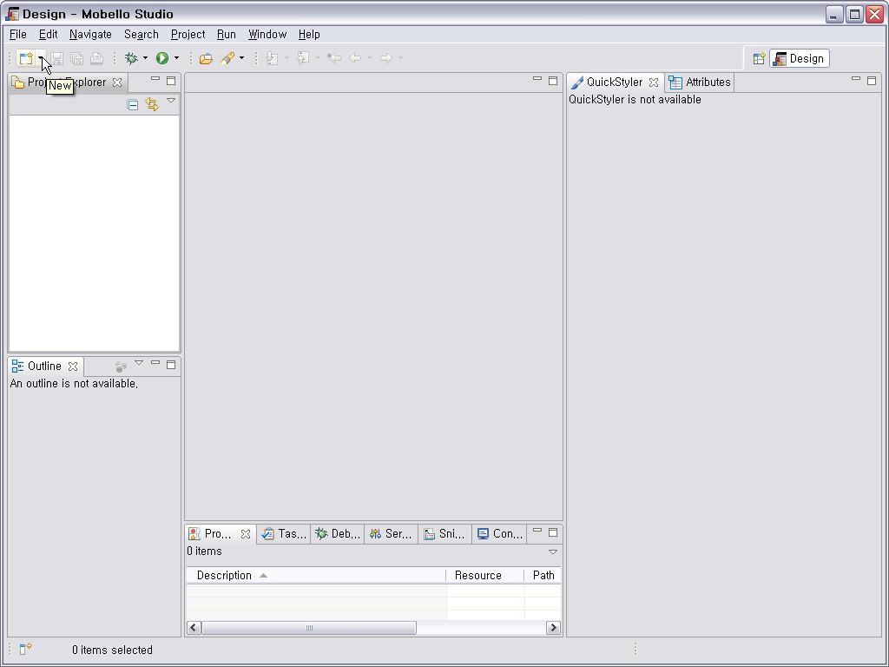
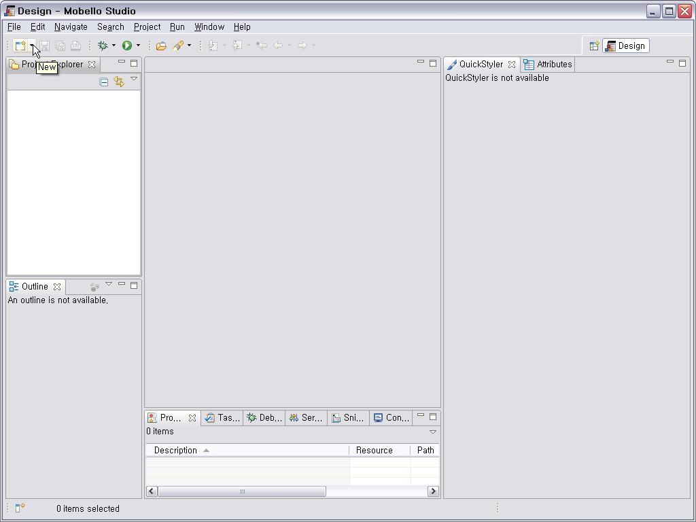
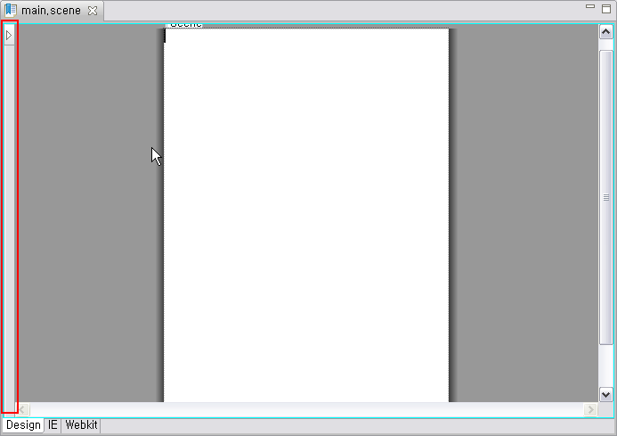
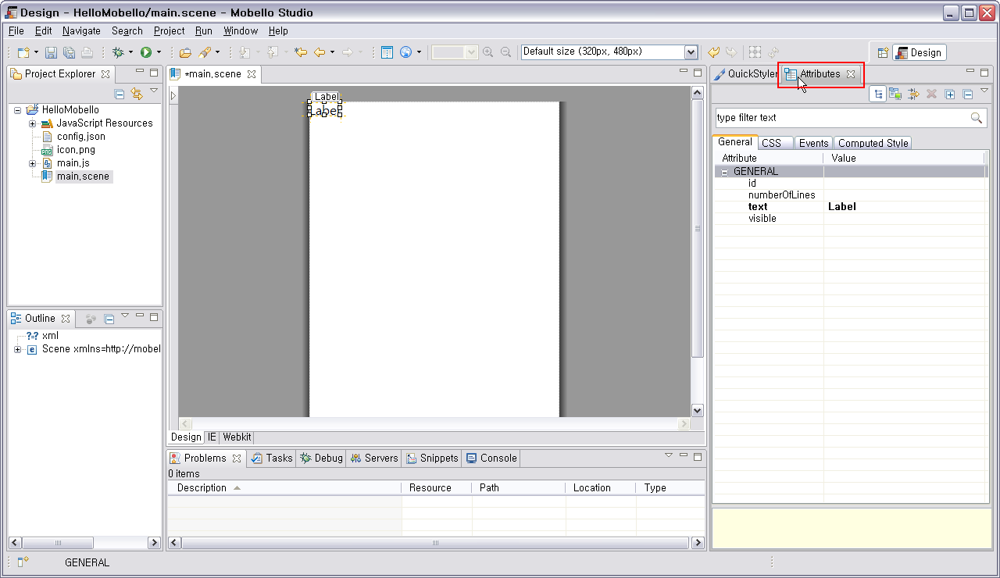
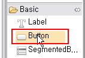
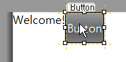
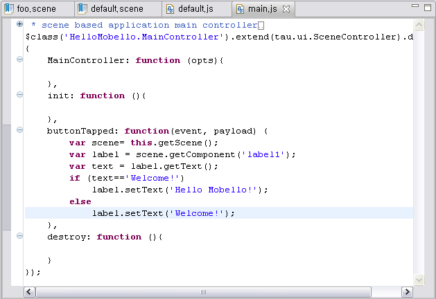
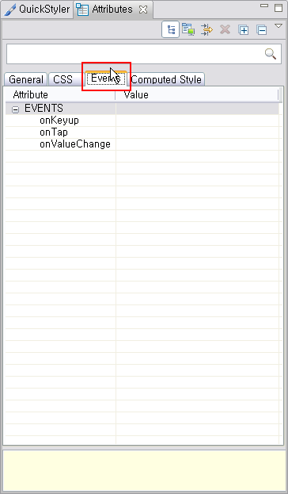
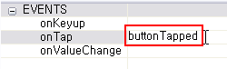

Studio 툴바 첫번째 버튼의 아래방향 화살표를 클릭합니다.

메뉴중 첫번째 Mobello Application Project 를 선택합니다.

위자드 에서 Project name 으로 'HelloMobello' 를 입력하고 Finish 를 선택합니다.

Project Explorer 에서 HelloMobello 라는 프로젝트를 확인할 수 있습니다.

이 가이드에서는 Mobello Application Project 를 생성하고 간단한 앱을 만들어 에뮬레이터에서 실행해보는 과정을 설명합니다.
Studio 툴바 첫번째 버튼의 아래방향 화살표를 클릭합니다.

메뉴중 첫번째 Mobello Application Project 를 선택합니다.
위자드 에서 Project name 으로 'HelloMobello' 를 입력하고 Finish 를 선택합니다.
Project Explorer 에서 HelloMobello 라는 프로젝트를 확인할 수 있습니다.
생성된 프로젝트에서 'main.scene' 파일을 더블 클릭하면 scene designer 가 열립니다.

Scene designer 의 좌측 부분에 마우스를 올리면 palette 가 열립니다.

Palette 에서 Basic 그룹 하위의 Label 컴포넌트를 마우스 클릭으로 선택합니다.

다시 마우스를 화면 중앙의 scene 위에 위치시키고 마우스 클릭으로 Label 을 배치합니다.

스튜디오 오른쪽의 Attributes 를 선택합니다.

Attribute 중 id를 'label1'로, text 를 'Welcome!' 으로 변경합니다. id 를 설정하면 main.js 에서 지정된 id로 컴포넌트 개체를 얻어올 수 있습니다.

다시 palette 에서 Button 을 선택합니다.

방금 배치한 Label 옆에 Button 을 배치합니다.

현재까지 만든 scene 을 에뮬레이터에서 실행해보도록 하겠습니다. 에뮬레이터를 사용하기 위해서는 Google Chrome 이 설치되어야 합니다. Google Chrome 은 "여기":http://www.google.com/chrome/ 에서 받을 수 있습니다.
먼저 Ctrl+S 키를 눌러 main.scene 을 저장하고 툴바에서 Run 버튼 을 클릭합니다.

다음과 같이 에뮬레이터가 실행되면서 방금 만든 scene 이 출력됩니다.

Project Explorer 에서 main.js 를 더블 클릭해서 Javascript Editor 로 엽니다.

다음 코드를 복사해서 init function 이전에 복사해 넣습니다.
buttonTapped: function (event, payload) {
var scene = this.getScene(); // scene 개체를 얻습니다.
var label = scene.getComponent('label1'); // label 컴포넌튼 개체를 얻습니다.
var text = label.getText(); // label 컴포넌트의 현재 텍스트 값을 얻습니다.
if(text == 'Welcome!')
label.setText('Hello Mobello!'); // label 의 텍스트 값을 'Hello Mobello!' 로 변경합니다.
else
label.setText('Welcome!'); // label 의 텍스트 값을 'Welcome!' 으로 변경합니다.
},

다시 main.scene 을 열고 Button 을 선택합니다. Attributes 뷰에서 Events 탭을 선택합니다.

onTap 속성을 선택하고 속성 값으로 'buttonTapped' 를 입력합니다. 이제 버튼을 tap 할때마다 buttonTapped 가 실행됩니다.

다시 에뮬레이터로 실행해서 버튼을 터치해보면 다음과 같이 Label 값이 'Hello Mobello' 로 바뀌는 것을 볼 수 있습니다.

에뮬레이터 오른쪽 상단의 'i' 아이콘에 마우스 커서를 옮기면 다음과 같이 URL 과 QR code 가 나타납니다.

아이폰 사파리나 안드로이드 브라우저의 주소창에서 해당 URL 을 직접 입력하면 에뮬레이터에서 실행 중인 app 을 스마트폰에서 직접 확인해 볼 수 있습니다. 단, 여기서 PC 와 스마트폰은 공유기등을 통해 같은 네트워크 안에서 동작 해야 합니다. 만일 같은 네트워크 안에 동작하는데도 스마트폰에서 실행이 안된다면 PC 의 방화벽 설정을 사용 안함으로 변경해보시기 바랍니다.
QR 코드 스캐닝을 지원하는 스마트폰 앱이 있다면 주소 입력 필요 없이 간편하게 스마트폰에서 실행해 볼 수 있습니다.